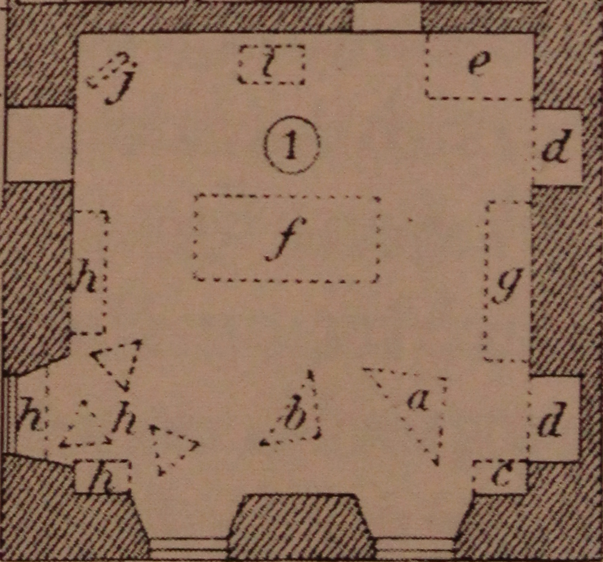
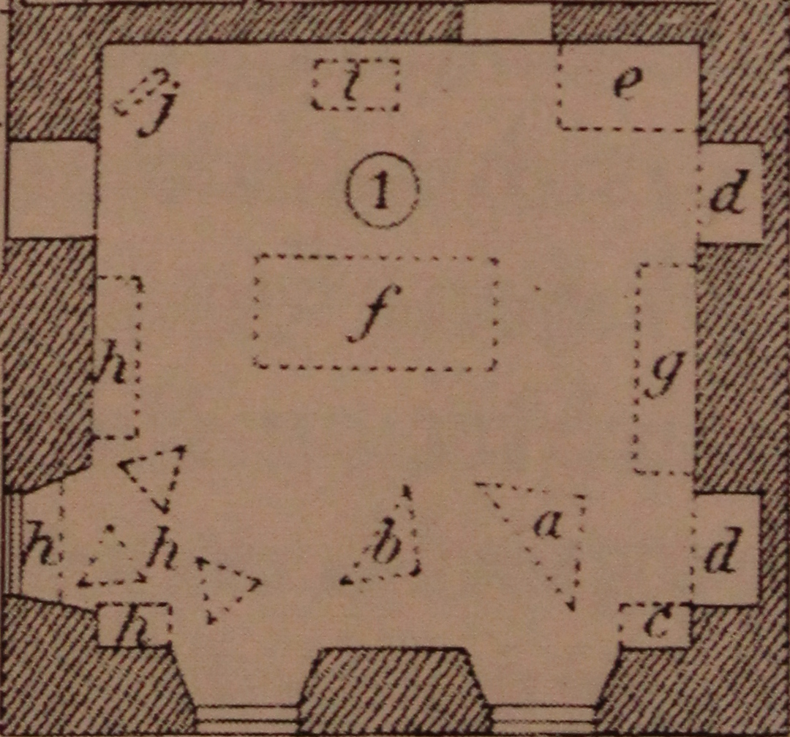

Risalit — C.W. Eckersberg studio September 1841

The "father of Danish painter" C.W. Eckersberg lived
in
Charlottenborg Palace at
Kongens Nytorv, Copenhagen.
One of the rooms was his studio where he would paint with
his students.
This is a room in the avant-corps (Danish: risalit) facing
square Kongens Nytorv.
One of Eckersberg's paintings that is painted in Charlottenborg
is his famous A Nude Woman Doing Her Hair Before a Mirror.
This is from 1841, where a woman with the unusual name "Florentine" was modeling
for several weeks during July, August and September.
Along with Eckersberg several students painted Florentine and two of these
student paintings are known:
One by L.A. Smith and one by Sally Henriques.
The exists a few drawings which shows painters and models in the studio along with a
large part of the interior with windows and doors.
A floorplan is also available.
Attempt on recreation of the September 1841 sessions
 
Risalit is an attempt to recreate the studio with
the art model and the paintings as it could have appeared in September 1841.

Risalit is an attempt to recreate the studio with
the art model and the paintings as it could have appeared in September 1841.
- There are four paintings of Florentine all put up on easels:
- Eckerbergs famous oil painting now publicly displayed
at the Hirschsprung Collection in Copenhagen.
- A drawing Eckersberg made in preparation for the oil painting.
This drawing is now in the part of the collection of
the Norwegian Nasjonalmuseet as Ung kvinne foran et speil.
The drawing is placed next to the oil painting.
- A big oil painting by Smith.
- The medium sized painting by Henriques.
- Florentine as a live sized model standing against the North wall.
This is a copy of the Eckersberg painting with Florentine extracted.
- The ellipsoidal mirror as seen in the paintings.
- The green table seen in the paintings.
- The floorplan rendered on the floor.
- Wallpaper is from Eckersberg's Naked Woman Putting on her Slippers painted in 1843 two years after the famous painting.
- The sky and clouds seen through the window are from an Eckersberg painting, Teglværket Renbjærg ved Flensborg Fjord available in the collection of Statens Museum for Kunst.
- The windows and doors are not from Charlottenborg but from the building housing
the Agency for Culture and Palaces (hosting HACK4DK 2016).
- Sound from a recording of Flyv, fugl! Flyv over Furesøens vove! where the music was composed in 1837 a few years before the creation of the painting.
The recording is much later, in 1889, and it is part of the Gottfried Ruben collection at Statsbiblioteket.
Technical
The 3D model is made in A-Frame 3D markup language.
To display the scene in a Smartphone with cardboard VR, press the icon in the lower
right corner (This is the standard A-Frame facility).